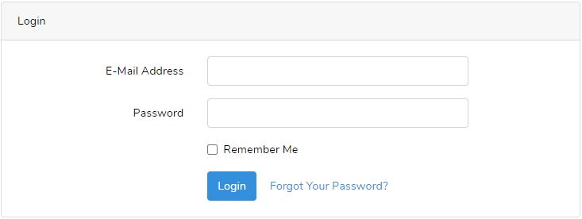

Technical Achievements 
Sprint One
-Laragon
    When we started this project, 
    we were unable to get a laravel 
    project that was pulled from the 
    github repo to work on anyone elses computers but the person who had made it. 
    This was a good problem to have as it taught me what the intial set up 
    processes that were needed for a laravel project and what each step was for, for example composer and npm.
    I decided that this would be a problem I would tackle as I felt that if I didnt it would be an issue for the rest of the project.


-Authentication
    my user stories for this sprint all related to authentication of user accounts,
    so I had to research how the laravel authentication package worked.
    Reading the documentation and figuring out the code was useful not 
    only just because it helped me accomplish my stories for the sprint 
    but also because it is a useful skill to be able to read someone elses code and find out how it works.
    
    This also allowed me to implement agile principle ten as I only had to add my teams required custom fields 
    (Date of birth) to the registration page in order to get authentication working to our reqired specifications 

-Personal reflection
    This sprint was an interesting intial test of our group work and dynamic, I believe it went smoothly (despite the covid interupption in the second week)
    The covid interupption


